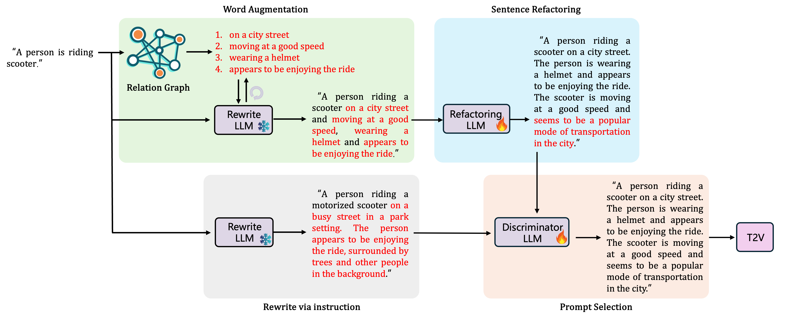

Text-to-video (T2V) generative models trained on large-scale datasets have made remarkable advancements. T2V generative models are sensitive to input prompts and inappropriate prompt design may even worsen the generative results. Previous studies utilize large language models (LLMs) to optimize user-provided prompts consistent with distribution of training prompts directly, lack of refined guidance considering both prompt vocabulary and specific sentence format. To this end, we introduce a retrieval-augmented prompt optimization (RAPO) framework. In order to address potential inaccuracies and ambiguous details generated by LLMs, RAPO optimizes the naive prompt from two branches and selects the better one for T2V generation. For the first branch, the user-provided prompts are augmented with relevant and diverse modifiers retrieved from a built relation graph, and then refactored into the format of training prompts through a fine-tuned LLM. For the second branch, the naive prompt is directly rewritten by a frozen LLM with the well-designed instruction. Extensive experiments demonstrate that our proposed method can effectively enhance the both static and dynamic dimensions of generated videos, demonstrating the significance of prompt optimization for user-provided prompts.
Method

The naive prompt is optimized by two branches respectively. For the first branch, it is enriched by the word augmentation module based on a constructed relation graph and a frozen Large Language Model (LLM). Subsequently, augmented prompt is refactored by a finetuned LLM into a specific format in the sentence refactoring module. For the second branch, the naive prompt is directly rewritten by a frozen LLM. Finally, the prompt selection module selects the better one from two branches' results as input for T2V model.
Results
Qualitative comparisons using LaVie with initial prompts (top) and optimized prompts from RAPO (below) as shown below.
a bear rummages through a dumpster, searching for food
a black bear rummaging through a dumpster in a city. The bear appears to be searching for food scraps and seems to be focused on its task. The dumpster is located in a busy city area, surrounded by buildings and visible trash cans.
a bicycle accelerating to gain speed
A bicycle is accelerating to gain speed. The rider is pedaling vigorously, picking up pace. The setting is dynamic and energetic, highlighting motion.
a bicycle and a car
A bicycle and a car are parked side by side, with the bicycle leaning against the car. The scene captures the essence of different modes of transportation.
a blue car drives past a white picket fence on a sunny day
A blue car is driving past a white picket fence on a sunny day. The car appears to be moving at a steady pace and seems to be heading towards a sere
a clock and a backpack
A clock and a backpack are set on a table, the clock showing the time while the backpack is ready for use. The scene suggests preparation for a new day.
a gray concrete pathway lights up with unexpected rainbow
A gray concrete pathway, illuminated with unexpected rainbow hues, captures a serene and peaceful scene. The pathway appears to be surrounded by trees and the sky, with the rainbow colors visible against the blue and green backdrop. It seems that the pathway is being lit up from within, creating a beautiful and captivating sight.
a motorcycle and a boat
A motorcycle and a boat are at a marina. The motorcycle, black and stylish, is parked next to a docked boat. The scene showcases different modes of transportation, blending elements of land and water travel.
a motorcycle and a bus
A motorcycle and a bus are at a stop, with the motorcycle parked and the bus waiting. The scene captures a moment of urban life.
a motorcycle race through the city streets at night
A motorcycle race is taking place through a busy city street at night. Riders are seen riding motorcycles with bright headlights illuminating the dark streets, and the sound of engines echoing off the buildings. The city lights provide a vibrant backdrop to the race. The riders appear to be enjoying the race and seem to be skilled at navigating the city streets at night.
a mushroom growing out of a human head
a closeup view of a human head with a wild mushroom growing out of it, resembling a mushroom growing in a forest. The mushroom appears to be growing out of the head and seems to be a strange sight.
a panda making latte art
a cartoon panda bear making latte art in a coffee shop. The panda bear is wearing an apron and appears to be using a latte art stencil to create a design in the milk foam. The coffee shop is serene and peaceful, with a blue and green background and trees visible through the window.
a person is riding scooter
A person is riding a scooter down a street. They seem to be enjoying the ride, moving smoothly along the pavement. The setting is vibrant, with a sense of freedom and fun.
a robot is dancing
A person is robot dancing at a party. They are moving stiffly and mechanically, entertaining others with their dance. The atmosphere is fun and lively, filled with music and laughter.
a sink and a toilet
a bathroom containing a sink and a toilet. The sink is white and appears to be clean, while the toilet is positioned nearby, suggesting practical usage in the space.
a teddy bear and a frisbee
a teddy bear and a frisbee sitting on a green lawn. The teddy bear appears to be resting peacefully, while the frisbee is lying nearby, waiting to be played with.
a tranquil tableau of house
a peaceful house surrounded by trees. The house appears to be serene, with a beautiful view of the green surroundings and a clear blue sky in the background.
a truck and a bicycle
a truck and a bicycle visible in the background. The truck appears to be parked on the side of the road, while the bicycle seems to be moving along the road.
a young girl and her teddy bear have a tea party
A young girl and her teddy bear are having a tea party on a table. The girl is wearing a pink dress and is sitting in a chair, while her teddy bear is sitting on a smaller chair. They are surrounded by tea cups, a teapot, and some cookies. The girl appears to be enjoying herself and seems to be having a good time with her teddy bear. The scene is peaceful and serene, with the background showing a beautiful green garden and blue sky. The table is visible in the foreground, with the girl and her teddy bear in focus.
an Iron man playing the electronic guitar, high electronic guitar
A man wearing an Iron Man suit is playing an electronic guitar. He is sitting in a room with a high electronic guitar and appears to be enjoying the music. The Iron Man suit is visible in the video, and the man is using the guitar with a focused expression.
golden sunlight piercing through dark clouds
A beautiful scene captures golden sunlight piercing through dark clouds in the sky. The sun appears to be shining brightly, with the light breaking through the clouds in a serene and peaceful manner. The background seems to be a mix of blue and green, with trees visible around. The scene appears to be aerial, offering a breathtaking view of the city and the water below.
iron presses down on wrinkled fabric
A person wearing gloves is using an iron, pressing down on a wrinkled piece of fabric on a table. The iron appears to be ironing out the wrinkles in the fabric. The background seems to be a room with a visible monitor and keyboard in the background.
linen curtains blowing beside a bamboo wall
A close-up view of linen curtains blowing gently beside a bamboo wall. The curtains seem to be swaying in the wind and the bamboo wall appears to be in a serene setting.
man teaches robot to play chess
A man is teaching a robot to play chess, sitting at a desk with a monitor and keyboard in a room. The man appears to be using the computer and seems focused on the task, while the robot is visible in the foreground, surrounded by chess pieces.
purple ballon floating near a yellow car
A purple balloon is floating near a yellow car in the background. The balloon appears to be floating gently by the wind and seems to be visible against the blue sky. The car is parked on a street with other vehicles and trees around.
rabbit tailor sews fabric into a dress
A rabbit, wearing a smock, is sitting at a small table with a sewing machine and a piece of fabric. The rabbit appears to be sewing a dress from the fabric. The sewing room seems peaceful with a serene background of green trees and blue sky visible through the window. The rabbit's focused expression captures something of its dedication to its work as a tailor.